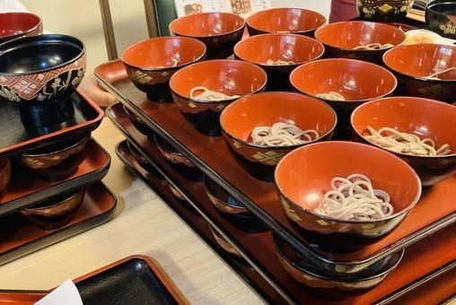
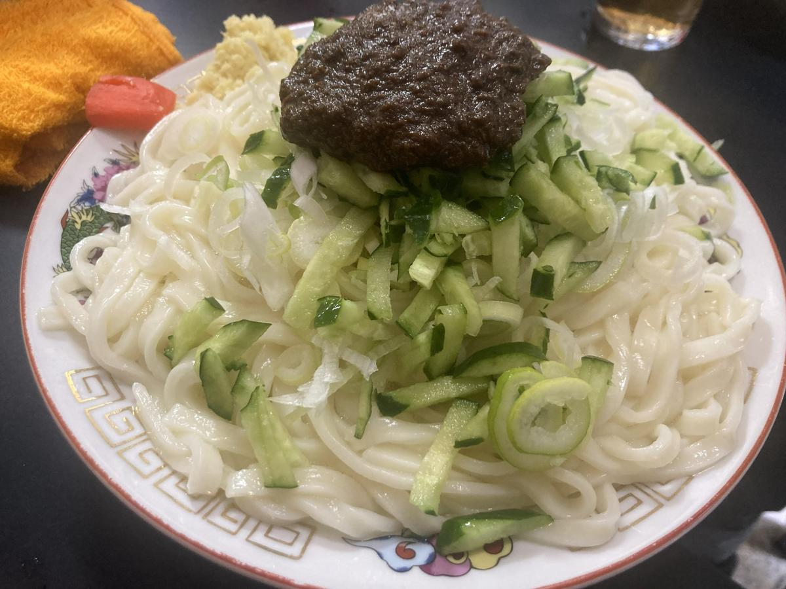

盛岡の食
Local Food
旅の途中立ち寄る一杯はどれにする？
Local Food
旅の途中立ち寄る一杯はどれにする？
Morioka Reimen
透明感のあるスープに浮かぶ氷と、力強いコシを持った麺。 盛岡冷麺は、ひと目見ただけで涼を感じさせてくれる料理です。
牛骨をベースにしたスープは、あっさりとしながらも奥行きがあり、 一口目から身体の奥に静かに染み渡っていきます。 キムチの辛みや果物の甘みが加わることで、 味は食べ進めるごとに表情を変えていきます。
暑さの厳しい日、歩き続けたあとの冷麺は、 ただ空腹を満たすための食事ではありません。 盛岡の夏そのものを受け取るような感覚を残してくれます。
食べ終えたあとに感じるのは、涼しさとともに残る静かな余韻。 もう一度この街を歩きたくなる、そんな気持ちを呼び起こす一杯です。

Wanko Soba
小さなお椀に次々と注がれる蕎麦と、店内に響く掛け声。 わんこそばは、盛岡の食文化を象徴する体験型の料理です。
何杯食べられるかを競うよりも、 その場の空気を楽しむことに価値があります。 食事という枠を越え、人との距離を縮めてくれます。
箸を進めるリズムや周囲の笑い声は、 気づけばその場にいる全員で共有されていきます。
食べ終えたあとに残るのは、満腹感だけではありません。 盛岡で過ごした時間そのものが、記憶として残ります。

Jajamen
もちもちとした平打ち麺に、特製の肉味噌ときゅうり。 じゃじゃ麺は、素朴でありながら奥行きのある盛岡の味です。
酢やラー油、にんにくを少しずつ加えながら、 自分好みに仕上げていく工程も、この料理の楽しみです。
同じ一杯でも、人によって味の印象が変わる。 その自由さが、日常の食として根づいてきました。
〆のちーたんたんまで味わい尽くすことで、 盛岡の食文化を最後まで体験したような余韻が残ります。
